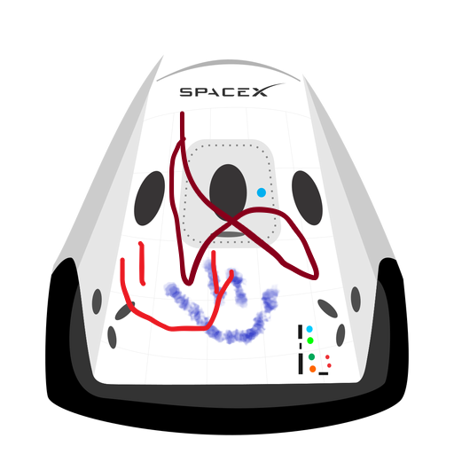

Tu blog de confianza y cabecera
Aqui vamos a hacer un blog post para demostrar un cambio bien chido jejejeje XDXD
Y este es el parrafo de inicio donde demostraras que eres la mejor persona que puede existir en este mundo, alguien que debe de andar con alguien como Brenda


A veces tienes que saber cuando alejarte de gente que te puede hacer daño, tu mismo lo sabes asi que si puedes. Mejor alejate, por mas que te caliente las bolas. Suscribete y dale like Espero un dia ganar el nobel y ganar la medalla fields